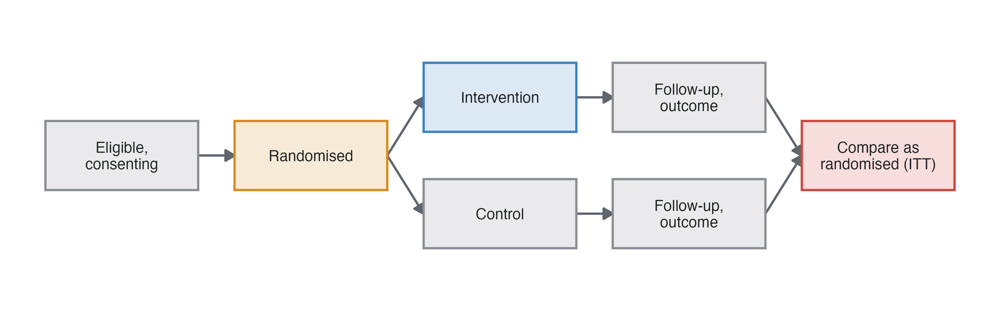
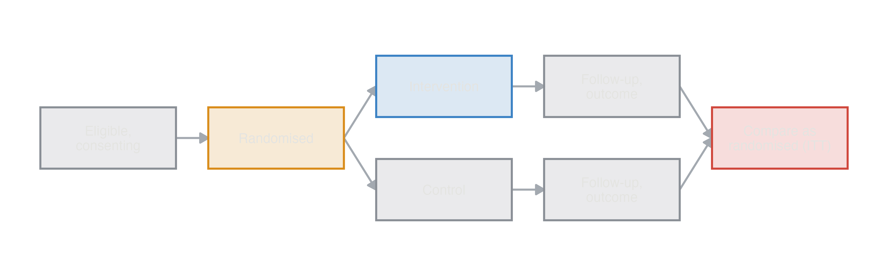
Epidemiology guide, part 3
In a randomised trial the investigator assigns the intervention by chance. Randomisation makes the arms comparable in everything, measured or not, so a difference in outcomes is caused by the intervention or by chance, and the confidence interval accounts for chance. There is no confounding to adjust for at baseline. What remains can still bias a trial: who leaves it, who does not take the treatment, and how the outcome is measured. This page covers the trial designs, then two designs that are not trials but look like them (before-after, method comparison), and diagnostic accuracy studies.


Estimates. The effect of being assigned the intervention, as risk difference, risk ratio, NNT, odds ratio, hazard ratio or mean difference.
Strengths. Randomisation removes confounding, known and unknown; blinding removes bias in measuring the outcome and in co-interventions; the strongest evidence for an effect.
Limitations. Expensive; selected participants and strict protocols (results may not apply to every patient); short follow-up; impossible or unethical for harmful exposures. Non-adherence dilutes the intention-to-treat effect, and the alternatives are no longer randomised comparisons: as treated (by the treatment received) and per protocol (only those who followed it) are confounded by whatever made people stop (Hernán and Robins 2017). Losses to follow-up related to prognosis bias any analysis.
Analysis. Binary outcome: risks per arm, RD with NNT, RR (Frequencies ▸ Independent Samples), or logistic regression. Continuous: difference in means (t-test), or ANCOVA adjusted for the baseline value, which is more precise. Time to event: Kaplan-Meier and Cox. Adjusting for strong prognostic factors increases precision. For odds and hazard ratios it also changes the estimand, from marginal to conditional (Measures and models).
Interpretation. “Risk of pancreatitis 17% with placebo and 9% with indomethacin: 8 fewer cases per 100 patients treated, NNT 12.” The odds ratio of the crude comparison is the effect on the population of patients, not on an individual with given characteristics.
| Value | |
|---|---|
| Risk: placebo | 0.1700 |
| Risk: indomethacin | 0.0896 |
| Risk difference, indomethacin vs placebo | -0.0806 |
| Number needed to treat for one event fewer, indomethacin vs placebo | 12.4000 |
| Risk ratio, indomethacin vs placebo | 0.5260 |
| Odds ratio, marginal (population), indomethacin vs placebo | 0.4800 |
| Odds ratio, conditional (true model), indomethacin vs placebo | 0.4700 |
In studysim. Rectal indomethacin to prevent post-ERCP pancreatitis, randomised trial; Biases ▸ Non-adherence adds as-treated and per-protocol rows to the key.
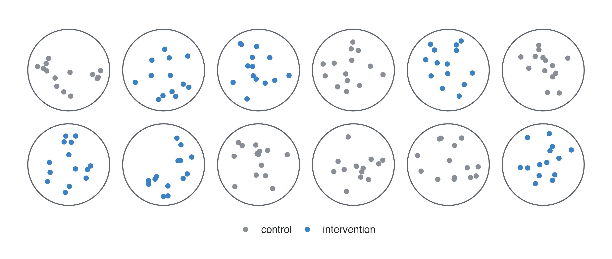
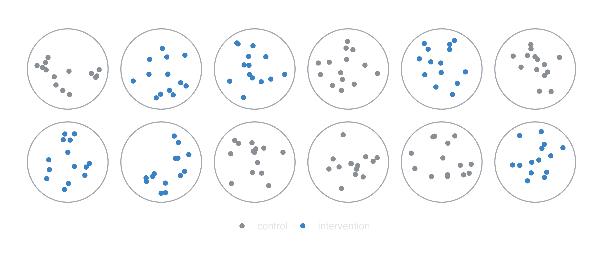
What it is. Groups are randomised: villages, schools, wards. Necessary when the intervention acts on groups (hand-washing campaigns, a new ward protocol) or when individuals would contaminate each other.
Strengths. Feasible for community interventions; avoids contamination.
Limitations. Outcomes of people in the same cluster are correlated (the intraclass correlation, ICC), so the effective sample size is smaller: the design effect is 1 + (m − 1) × ICC for clusters of m people. Few clusters means chance imbalance between arms.
Analysis. A mixed (multilevel) model with a random intercept per cluster (GAMLj), or cluster-robust standard errors. Ignoring the clusters gives confidence intervals that are too narrow.
Interpretation. A mixed logistic model gives an odds ratio within clusters (conditional); a model with robust errors gives the population-average one, which is closer to 1.
In studysim. Handwashing and childhood pneumonia (counts of pneumonia), Vitamin A and child mortality, cluster randomised trial; vary the intraclass correlation.
Two interventions randomised independently, so each participant gets one of four combinations. One trial answers two questions, if the interventions do not interact: each main effect is estimated by comparing everyone with and without it. With an interaction the main effects are averages over the other intervention, and the trial needs to be powered to detect the interaction. Analyse with both treatments in the model (ANOVA, logistic or Cox regression) and test their product term. In studysim: Aspirin and beta-carotene in male physicians (aspirin and beta-carotene).
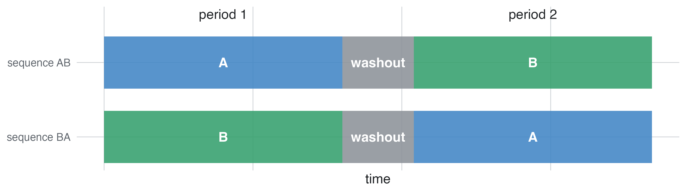
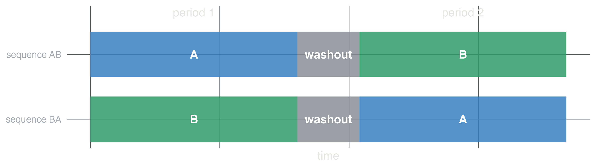
What it is. Each participant receives both treatments in random order, for stable chronic conditions and treatments whose effect wears off.
Strengths. Each participant is their own control: with outcomes that are correlated within a person, far fewer participants are needed.
Limitations. Only for reversible effects and stable conditions; a carryover effect of the first treatment into the second period biases the comparison; dropouts lose both periods.
Analysis. Paired t-test of the outcome under A and under B (one row per person: Repeated measures: wide), or a mixed model with treatment and period as fixed effects and the participant as cluster (long layout), which also estimates the period effect.
In studysim. Antihypertensive drug or Bioequivalence of two formulations, 2×2 crossover; Design options ▸ period and carryover effects.
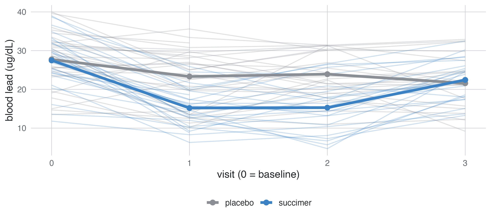
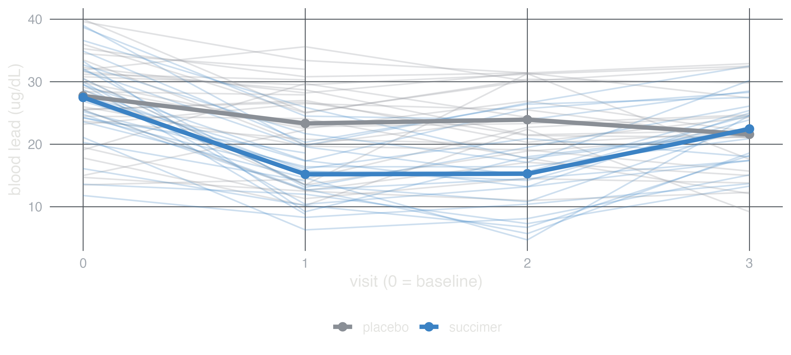
Repeated visits give the trajectory of the effect, but participants drop out, and dropout usually depends on how they were doing. Comparing only the completers at the last visit is biased when dropout depends on earlier values. A linear mixed model with all visits (random intercept per participant, treatment by visit) is valid when dropout depends on values already observed (missing at random). jamovi: GAMLj Mixed Models; repeated-measures ANOVA uses completers only.
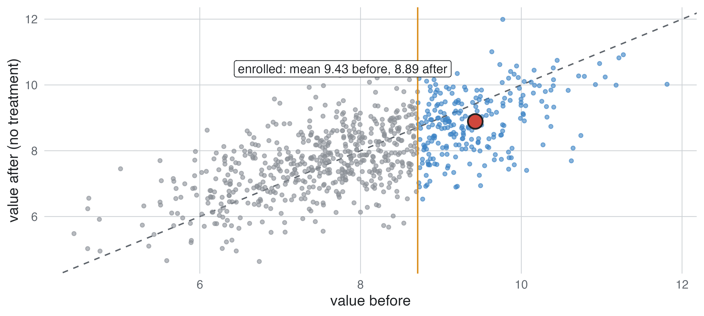
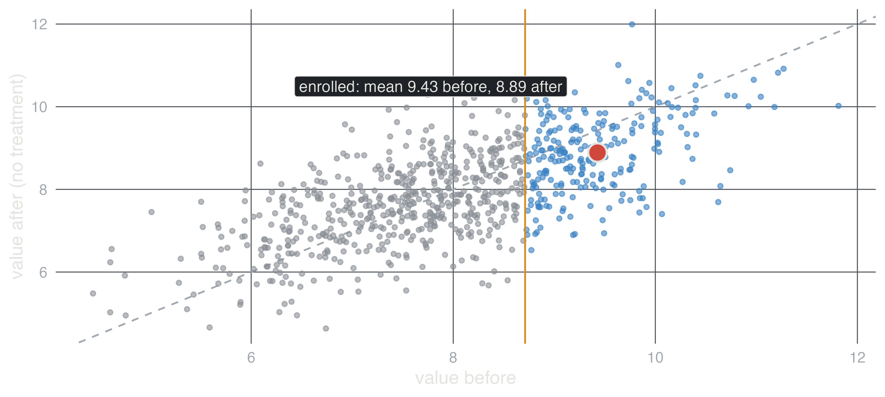
Everyone is measured before and after the intervention. The mean change mixes the effect with the natural course of the condition, with what else happened meanwhile and, when people are enrolled because their values were high, with regression to the mean (Barnett 2005). A paired t-test tests the change, not the effect. A control group (a trial) is the remedy; failing that, enrol on a separate baseline measurement or repeat it. In studysim: Metformin vs placebo on HbA1c, before-after, with Enrol only above percentile.
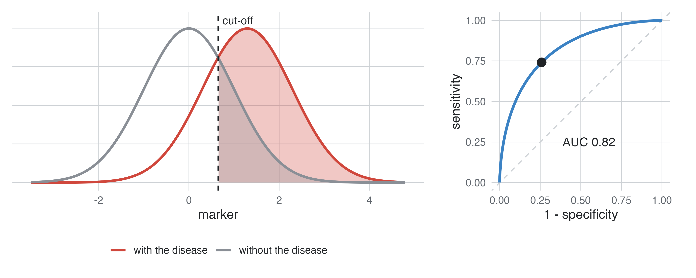
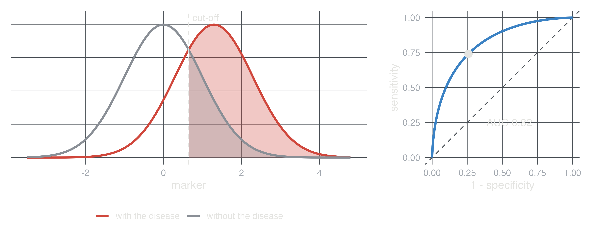
What it is. A sample of people in whom the test would be used, all receiving the index test and the reference standard (the best available way of knowing who has the disease).
Estimates. Sensitivity and specificity at a cut-off, the ROC curve and its area (AUC), likelihood ratios, and the predictive values (PPV, NPV), which also depend on the prevalence.
Biases. Spectrum bias: studying severe cases and healthy volunteers instead of the patients where the test is needed overstates accuracy (Ransohoff and Feinstein 1978). Partial verification: when only test-positives (and some negatives) get the reference standard, sensitivity is overstated and specificity understated. An imperfect reference standard, and a cut-off chosen on the same data, flatter the test.
Analysis. 2×2 table at a cut-off; ROC analysis (meddecide, psychoPDA); logistic regression to combine markers, validated on other data.
In studysim. PSA and prostate cancer, High-sensitivity troponin for myocardial infarction, diagnostic design; Biases ▸ spectrum and verification.
Two methods measure the same quantity in the same people (a new device against the standard). A correlation coefficient says nothing about agreement: two methods can correlate perfectly and differ by 10 units. The Bland-Altman analysis plots the difference against the mean of the two and reports the mean difference (bias) and the limits of agreement, mean ± 1.96 SD of the differences, within which 95% of the differences fall (Martin Bland and Altman 1986). Whether those limits are acceptable is a clinical decision. A slope in the plot shows a proportional bias.
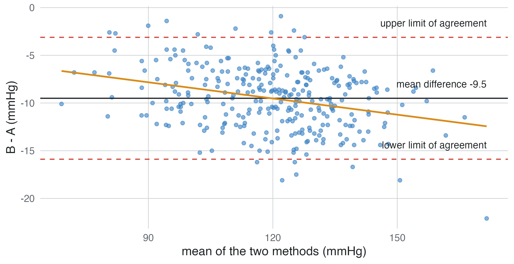
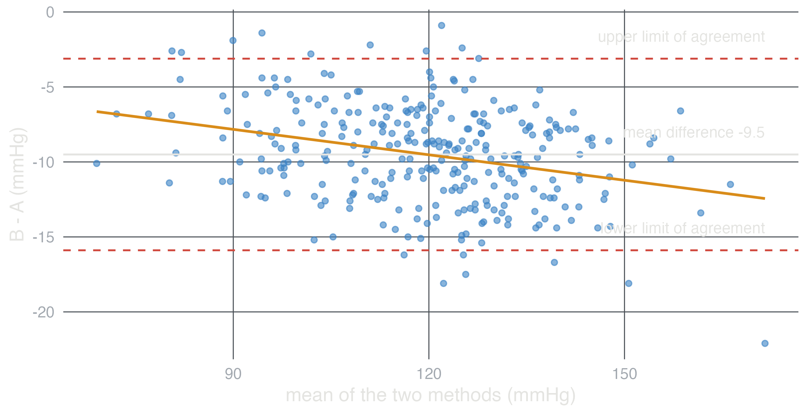
| design | estimand | main threat | analysis |
|---|---|---|---|
| Parallel trial | effect of assignment (ITT) | non-adherence, loss to follow-up | as randomised; ANCOVA, Cox |
| Cluster trial | effect of assigning the cluster | correlation within clusters | mixed model or robust errors |
| Factorial | two main effects | interaction | both treatments and their product |
| Crossover | within-person effect | carryover | paired t-test or mixed model with period |
| Longitudinal | effect over time | informative dropout | linear mixed model |
| Before-after | change, not effect | regression to the mean, secular trend | add a control group |
| Diagnostic | sensitivity, specificity, AUC | spectrum, partial verification | patients like those who will be tested |
| Method comparison | agreement | proportional bias | Bland-Altman, not correlation |